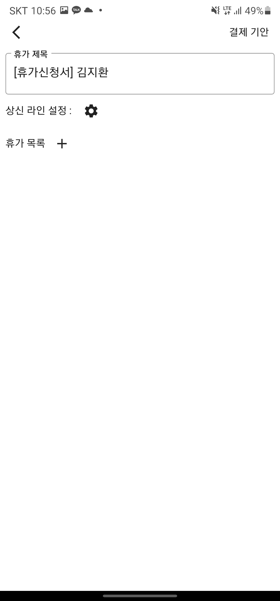
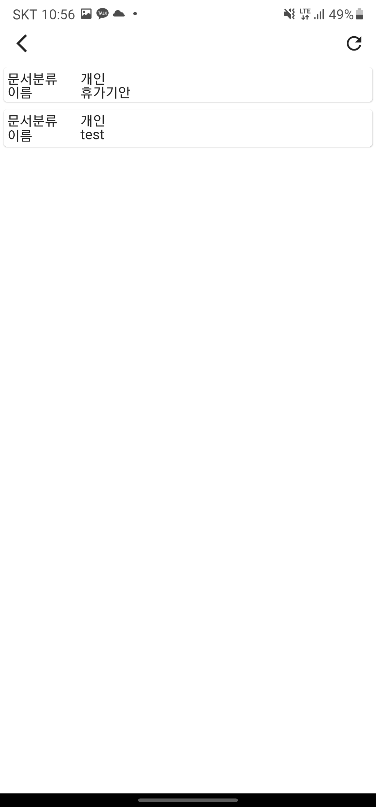
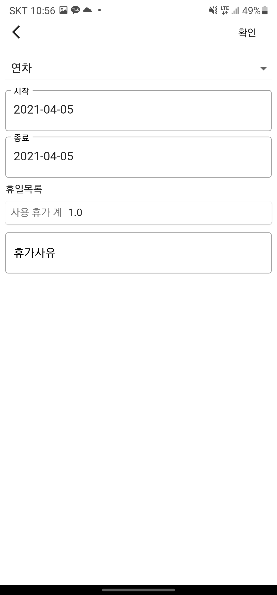
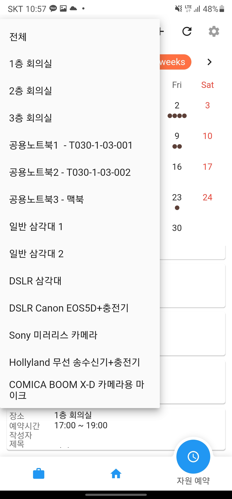
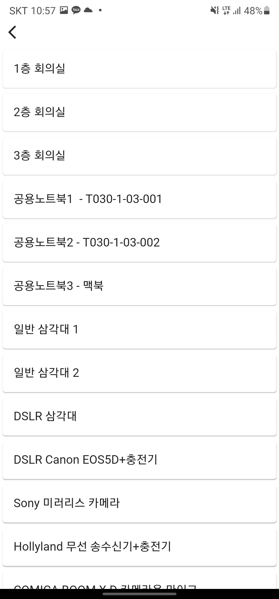
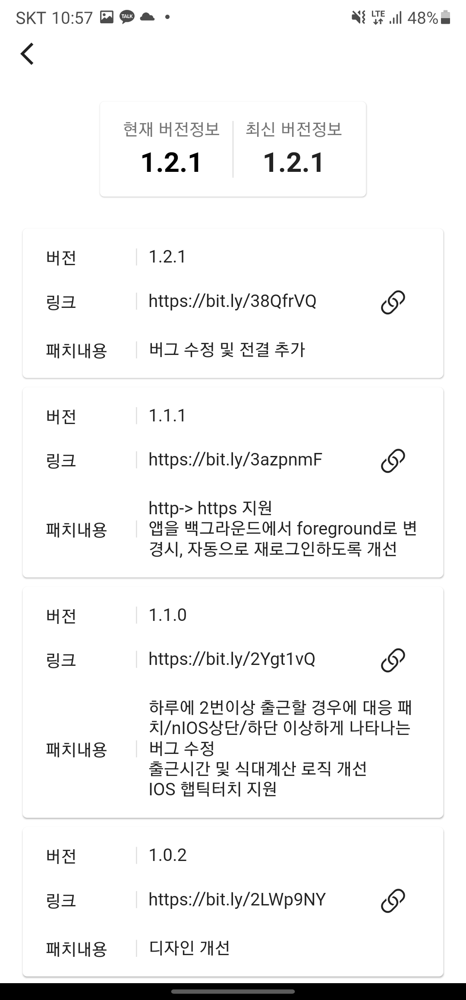

Twinny Helper 앱 제작기
사내 비즈박스 도입에 따른, TwinnyHelper 앱 제작기
총 개발 소요시간 : 약 20시간
올해 초, 사내 그룹웨어가 도입되었다.
도입된 그룹웨어는 비즈박스고, 해당 그룹웨어를 통해서 출퇴근기록, 휴가신청, 회의실예약 등이 가능하다.
이전에, slack을 이용해서, 출근 기록을 기록하고, 해당 기록을 기반으로 회사 식대를 계산하는 Bot을 만들어서 사용했었는데, 해당 비즈박스의 API들을 사용하여, Bot의 기능을 대체할 수 있겠다고 생각했다.
해당 그룹웨어에서 자체 제작된 앱이 있으나, 출퇴근기록조회, 휴가신청같은 기능이 앱에서 동작하지 않아서 따로 제작하기로 마음먹었다.
앱 제작에 사용된 프레임워크는 구글에서 만든 Flutter이다.
처음 접했을 때는 1.0이 막 런칭되었을 떄부터 조금씩 건드려보고 있는데, UI만드는 부분이 너무 직관적이고, 레고를 조립한다는 느낌을 받았어서 개인적으로 앱 만들기가 편하다고 생각하는 프레임워크다.
상태관리는 Provider를 사용했다.
해당 라이브러리는 이전에 여러가지 앱을 만들때부터 사용해봤는데, 사용방법 자체도 간단하고 복잡하지 않아 개인적으로 만족스럽게 사용중이다.
저장소는 SharedPreference를 사용했고, 유저의 계정 id/password 를 암호화해서 저장하였다.
일단 비즈박스에 공개된 API 문서부터 찾아보았는데, 해당 문서를 찾지 못했다.
따라서, 크롬 개발자 도구를 이용해서, 네트워크 통신 내용을 보며, API 정보를 하나 하나 찾아갔다.
로그인
비즈박스 그룹웨어에서는 클라이언트(웹) 측에서 계정아이디와 비밀번호를 암호화해서 보낸다.
해당 부분에 대해서 앱 내에서도 따라 구현하였다.
로그인시, 쿠키발급을 위한 API와, 실제 추가적인 몇가지 권한을 부여하는 API가 따로 존재했다.
즉, 로그인 API 요청 -> 쿠키발급 -> 권한부여 서버(Spring)로 Redirect -> 메인 페이지 이동 순서로 로그인이 진행되었다.
만약, 쿠키는 발급받았는데, Spring 서버로 Redirect시키지 않으면 일부 기능이 정상동작하지 않는다.
(그중, 경험했던 정상동작하지 않는 부분은 자원예약에서 참여자를 지정할 수 있는데, 해당 목록을 불러오지 못하는 부분이 있었다.)
근무기록
해당 기능은 비즈박스 어플리케이션에서 조회할 수 없음
근무기록을 가져오는 작업은 금방 끝났다. 데이터와 요청 자체가 간단했기 때문이다.
하지만, 휴가를 쓰게 되면, 휴가 + 출근여부 정상 두개가 동일한 날에 존재하는 경우가 있다는 것을 추후 유지보수 단계에서 알게 된 부분이 있었는데, 해당 부분은 여유될때 추가적으로 개선해야될 부분이다.
식대계산
식대는 사내 규칙으로만 존재하며, 비즈박스 앱에서는 제공하지 않는 기능이다.
식대는 근무기록을 기반으로, 당일 출근하면 7000원. 근무시간이 11시간을 넘어가면 14000원이 되는 방식이다.
앱 내에서는 계산을 하고 당월 첫째날부터 당일까지 사용 가능한 총 식대를 계산하여 보여준다.
휴가 기안
해당 기능은 비즈박스 어플리케이션에서 사용할 수 없음
휴가 기안에 대한 기능을 앱에 구현할 때 생각보다 시간이 오래 걸렸던 걸로 기억한다.
그 이유는 여러개의 휴가 목록. 휴가 공유 캘린더 따로 존재. 휴가 기안시 페이지로 넘어갈 때, 휴가 목록에 대한 HTML로 전달하는 부분, 휴가 선택시, 공휴일 혹은 주말여부 자동 제외 등이 있었다.
그리고 휴가를 쓸 때, 결제자를 설정하는데, 해당 설정란을 가져와서 순서를 어떻게 하느냐도 문제였었다.
어떻게 꾸역꾸역 작업해서 결국 앱 내에 휴가 기안 기능은 포함되었고, 개인적으로 웹에 접속해서 신청하는 것보다 훨씬 편하다고 생각한다.
자원 달력
자원 달력은 비즈박스 앱에도 존재하는 기능인데, 회의실/장비같은 자원을 예약하고, 예약 목록을 조회할 수 있는 기능이다.
해당 부분에 대해서는 비즈박스 앱과 거의 동일하게 옮겨왔는데, 자원에 따라서 따로 당일 예약 여부를 볼 수 있다는 차이점이 존재한다.
업데이트 이력 관리 및 배포
업데이트 이력 관리는 github에 올려둔 파일을 조회하여 이력을 관리하도록 하였다.
해당 파일에는 버전/업데이트 로그가 존재한다.
그리고 배포는 사내 앱배포 어플리케이션인 트위니 앱센터와 회사 Confluence를 이용하여 배포하였다.
디자인
앱 디자인은 처음에는 무척 투박했으나, 친하게 지내는 회사 디자이너분께서 근무기록+식대계산을 하는 화면에 대해서만 어느정도 디자인을 해주셨다.
디자인 당시, 나는 근무기록 + 식대계산을 한 화면에 넣고 싶어했고, 디자이너분꼐서는 두개의 성격이 달라서, 같은 페이지에 있으면 문제가 될 수 있다고 이야기 해주셨었는데, 이야기 끝에 타협하여 지금의 형태가 되었다. ( 솔직히 거의 밀어붙이기만 했었다… )
실제로, 4월의 경우, 시작이 되는 1일이 월요일이 아니어서 금주의 출근기록을 조회 + 평균근무시간을 보여주는 디자인과 식대를 계산한 디자인이 매치되지 않는 부분이 있다고 느꼈었다.
열심히 만들었고, AOS/IOS/DESKTOP으로 Deploy하여 배포해보았는데, 개인적으로 재밌었고, 사람들이 잘쓰고있다고 너무 좋다고 이야기해주는 것을 보니, 보람찼다.
그리고 처음으로 디자이너가 준 디자인을 보고 맞춰가면서 작업해봤는데, 어려울거라고는 생각했지만, 생각보다 더 어려웠었다. 하지만, 처음 해보니, 재미도 있었다.
앱을 만들면서 나는 정리가 잘 안된다를 다시 한 번 느꼈고, 아직도 많이 부족하구나를 다시 한번 느꼈다. 더 정진해야겠다.
디자인 도움을 주신 디자이너분께 다시한번 감사합니다
앱은 추후, 코드를 조금 더 정리한 뒤에 개인 git에 공개할 예정이다.
(휴가 기안시, 대상이되는 캘린더를 임의로 변경할 수 있게 수정하고, 타회사와 맞지 않는 식대계산 부분은 제외할 예정)
인앱 사진
-
아래에서 자원 예약시, 참여자는 캡처 당시 모바일 환경에서 보이질 않아서 제외함.
-
출퇴근기록 / 식대 / 주평균출근시간

-
휴가신청 목록

-
휴가신청 화면 
-
결제라인 설정(조회) 
-
휴가신청 화면 (결제라인 설정이후)

-
휴가 선택 화면 
-
휴가 종류 목록

-
휴가 선택 화면 ( 종류선택 + 날짜지정 이후 )

-
휴가 신청화면 ( 상신라인 설정 및 휴가 목록 선택 이후 )

-
자원 달력

-
자원 달력 예약 디테일

-
자원 달력 자원 종류 필터링 
-
자원 예약

-
자원 예약 ( 자원 목록 ) 
-
설정

-
버전정보 및 업데이트 로그 